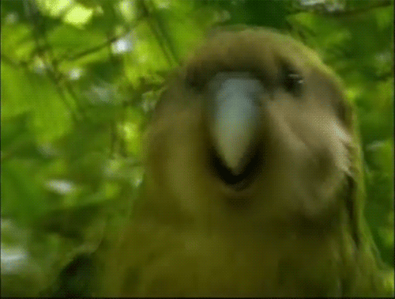

Kākāpō
After appearing in the BBC documentary Last Chance to See, Sirocco the kākāpō inspired the Party Parrot Slack emoji. 
- Scientific Name: Strigops habroptila
- Weight: 0.95 to 4 kg
- Origin: New Zealand
- Status: Critically endangered (population ~125)
The kākāpō is a flightless parrot native to New Zealand. It lives in a variety of habitats across the islands, and primarily eats plants, particuarly the fruit of the rimu tree. Colonialism introduced non-native predators, such as cats, which brought the kākāpō to the brink of extinction, and it remains a critically endangered species today. Recovery programs aim to preserve and increase the kākāpō population.